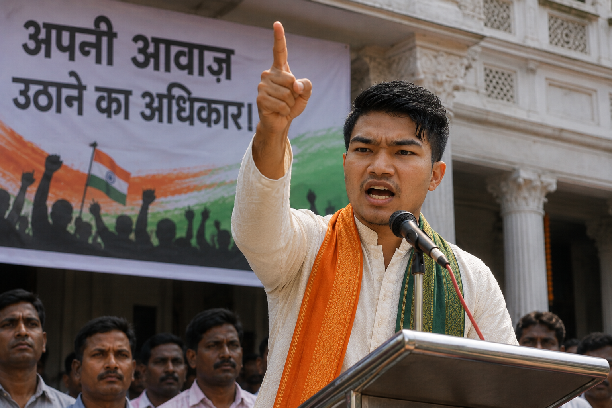
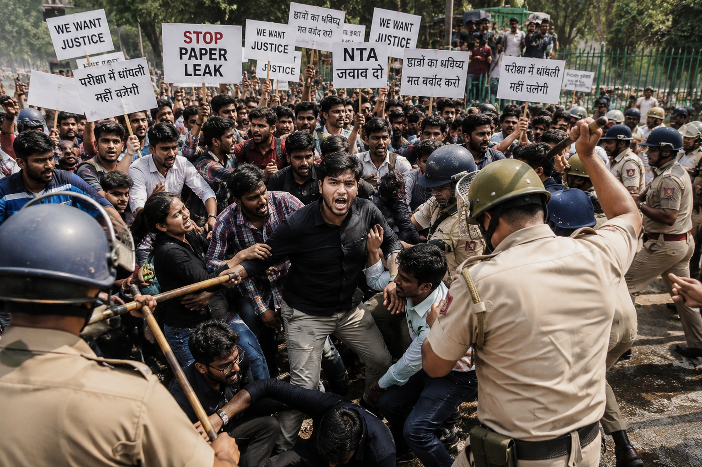

स्वतंत्रता की असली कीमत: अपनी बात कहने और निर्णय लेने का अधिकार
आज़ादी का सबसे महत्वपूर्ण अर्थ है—अपनी आवाज़ उठाने का अधिकार।
एक लोकतंत्र में नागरिक सरकार से सवाल पूछ सकता है, अपनी समस्याओं के लिए प्रदर्शन कर सकता है, शांतिपूर्ण तरीके से विरोध दर्ज करा सकता है और न्याय की मांग कर सकता है। लेकिन लोकतंत्र तब मजबूत होता है जब केवल बोलने का अधिकार ही नहीं, बल्कि सुने जाने और निष्पक्ष प्रक्रिया मिलने का भरोसा भी मौजूद हो।
हाल के वर्षों में छात्रों और युवाओं के कई आंदोलन शिक्षा, रोजगार और परीक्षा व्यवस्था से जुड़े सवालों को सामने लाते रहे हैं। 2026 में परीक्षा प्रश्नपत्र लीक और परीक्षा व्यवस्था को लेकर देशभर में युवाओं के बड़े प्रदर्शन हुए। स्रोत सामग्री के अनुसार, इन प्रदर्शनों में परीक्षा प्रणाली, युवाओं के अवसर और जवाबदेही को लेकर व्यापक असंतोष सामने आया।
इसलिए स्वतंत्रता का प्रश्न केवल यह नहीं है कि “क्या मैं बोल सकता हूँ?” बल्कि यह भी है कि “क्या मेरी आवाज़ को गंभीरता से सुना जाएगा?”

क्या हम बिना डर के सवाल पूछ सकते हैं? क्या विरोध करने पर हमें अपराधी बना दिया जाता है? क्या हमारी समस्याओं पर ईमानदारी से काम होता है?
समानता: संविधान का वादा और समाज की वास्तविकता
भारत का संविधान सभी नागरिकों के लिए समानता और कानून के समान संरक्षण की भावना को स्थापित करता है। लेकिन सामाजिक और आर्थिक असमानताएँ आज भी अनेक लोगों की प्रगति को प्रभावित करती हैं।
दलित, आदिवासी, धार्मिक अल्पसंख्यक और अन्य वंचित समुदायों के खिलाफ भेदभाव तथा हिंसा की घटनाएँ समय-समय पर सामने आती रही हैं। स्रोत सामग्री में Human Rights Watch द्वारा भारत में दलितों और आदिवासी समुदायों के खिलाफ जारी भेदभाव और हिंसा पर चिंता का उल्लेख है।
2018 में दलित अधिकार कार्यकर्ताओं की गिरफ्तारियों को लेकर भी मानवाधिकार संगठनों ने सवाल उठाए थे। स्रोत सामग्री में Human Rights Watch और Amnesty International India की चिंताओं का उल्लेख किया गया है।
समानता का अर्थ केवल यह नहीं कि कानून की किताब में सभी बराबर हैं। इसका अर्थ यह भी है कि किसी बच्चे की जाति, समुदाय, आर्थिक स्थिति, भाषा, लिंग या सामाजिक पृष्ठभूमि उसके भविष्य का निर्धारण न करे।
शिक्षा: आज की पीढ़ी की सबसे बड़ी स्वतंत्रता

आज के भारत में शिक्षा केवल ज्ञान का माध्यम नहीं, बल्कि सशक्तिकरण और सामाजिक गतिशीलता का सबसे महत्वपूर्ण साधन है।
लेकिन जब परीक्षा व्यवस्था में पेपर लीक, देरी, अनिश्चितता या प्रशासनिक गलतियों के कारण लाखों छात्रों का भविष्य प्रभावित होता है, तो समस्या केवल परीक्षा की नहीं रहती—वह विश्वास की समस्या बन जाती है।
2026 में NEET से जुड़े विवाद ने इस चिंता को बहुत बड़े स्तर पर सामने ला दिया। स्रोत सामग्री के अनुसार, लगभग 20 लाख विद्यार्थियों ने परीक्षा दी थी; प्रश्नपत्र लीक के आरोपों के बाद परीक्षा रद्द कर पुनः परीक्षा करानी पड़ी और इसके बाद छात्रों तथा युवाओं के बड़े प्रदर्शन हुए।
2024 में भी NEET विवाद के कारण छात्रों ने देश के विभिन्न हिस्सों में विरोध प्रदर्शन किए थे और परीक्षा प्रक्रिया में पारदर्शिता की मांग उठाई थी।
रोजगार और अवसर: डिग्री के बाद रास्ता कहाँ है?
आज करोड़ों युवा शिक्षा प्राप्त कर रहे हैं, प्रतियोगी परीक्षाओं की तैयारी कर रहे हैं और वर्षों तक रोजगार की प्रतीक्षा करते हैं।
इसलिए भारत की प्रगति का मूल्यांकन केवल GDP, बड़ी परियोजनाओं या डिजिटल विकास से नहीं किया जा सकता। यह भी देखना होगा कि एक सामान्य युवा को शिक्षा के बाद सम्मानजनक रोजगार और आगे बढ़ने का वास्तविक अवसर कितना मिलता है।
2026 के युवाओं के प्रदर्शनों में परीक्षा भ्रष्टाचार के साथ-साथ बेरोजगारी और सीमित अवसरों की चिंता भी दिखाई दी। स्रोत सामग्री में Reuters द्वारा इन प्रदर्शनों को शिक्षा, रोजगार और युवाओं में बढ़ते असंतोष से जोड़े जाने का उल्लेख है।
केवल डिग्री बाँटना पर्याप्त नहीं है। डिग्री को अवसर में बदलना भी राज्य, उद्योग और समाज की जिम्मेदारी है।
एकता: विविधता के बावजूद साथ रहना
भारत की सबसे बड़ी ताकत उसकी विविधता है।
भाषाएँ अलग हैं, भोजन अलग है, पहनावा अलग है, धर्म और संस्कृतियाँ अलग हैं—फिर भी हम एक देश हैं।
लेकिन जब सामाजिक तनाव, जातीय संघर्ष या धार्मिक विभाजन बढ़ता है, तो सबसे पहले सामान्य नागरिक प्रभावित होता है।
2023 का मणिपुर संकट इसका एक गंभीर उदाहरण रहा। स्रोत सामग्री के अनुसार, हिंसा के दौरान बड़ी संख्या में लोग मारे गए और विस्थापित हुए; छात्रों ने भी हिंसा के खिलाफ प्रदर्शन किया। Human Rights Watch की चिंताओं का भी उल्लेख स्रोत में है।
“आज़ादी का अर्थ यह भी है कि कोई नागरिक अपने ही देश में डर के कारण अपनी पहचान छिपाने पर मजबूर न हो।”
न्याय: कानून होना ही काफी नहीं, न्याय मिलना भी जरूरी है
किसी लोकतंत्र की सबसे बड़ी परीक्षा यह है कि कमज़ोर व्यक्ति को न्याय कितनी जल्दी और कितनी निष्पक्षता से मिलता है।
जब किसी समुदाय के खिलाफ हिंसा होती है, जब किसी छात्र के साथ अन्याय होता है या जब कोई नागरिक अपने अधिकारों के लिए संघर्ष करता है, तब केवल FIR या जांच की घोषणा पर्याप्त नहीं होती। लोगों को निष्पक्ष जांच, उचित प्रक्रिया और समयबद्ध न्याय की आवश्यकता होती है।
स्रोत सामग्री में मानवाधिकार रिपोर्टों द्वारा भारत में हिरासत में मौतों, कथित अत्यधिक बल प्रयोग और कमजोर समुदायों के खिलाफ हिंसा जैसे मुद्दों पर चिंता का उल्लेख है।
यह सवाल किसी सरकार के पक्ष या विपक्ष का नहीं है। यह लोकतंत्र की गुणवत्ता का सवाल है।
पिछले वर्षों की कुछ घटनाएँ, जिन्हें हमें याद रखना चाहिए
दलित अधिकार आंदोलन और गिरफ्तारियाँ
दलित अधिकारों से जुड़े आंदोलन और कार्यकर्ताओं की गिरफ्तारियों ने अभिव्यक्ति, विरोध और अधिकारों की सुरक्षा को लेकर राष्ट्रीय बहस पैदा की।
सीख: विरोध करने वाले नागरिक को अपराधी मानने से पहले उसकी आवाज़ और उसके अधिकारों को समझना आवश्यक है।विश्वविद्यालय परिसर और नागरिकता कानून के खिलाफ छात्र प्रदर्शन
नागरिकता कानून को लेकर विरोध देश के कई विश्वविद्यालय परिसरों तक पहुँचा। स्रोत सामग्री में जामिया मिलिया इस्लामिया परिसर की पुलिस कार्रवाई के बाद राष्ट्रीय बहस का उल्लेख है।
सीख: विश्वविद्यालय केवल डिग्री देने की जगह नहीं हैं; वे लोकतांत्रिक बहस और विचार-विमर्श के महत्वपूर्ण केंद्र भी हैं।मणिपुर हिंसा और छात्रों का विरोध
मणिपुर में लंबे समय तक चली हिंसा ने हजारों परिवारों के जीवन को प्रभावित किया। छात्रों ने भी हिंसा और अपने समुदायों की स्थिति के खिलाफ आवाज़ उठाई।
सीख: संवाद, न्याय और पुनर्वास भी जरूरी होते हैं।NEET विवाद और छात्रों का आंदोलन
NEET परीक्षा में कथित अनियमितताओं और पेपर लीक के आरोपों के बाद छात्रों ने कई शहरों में प्रदर्शन किए और पारदर्शिता तथा जवाबदेही की मांग की।
सीख: परीक्षा प्रणाली में विश्वसनीयता सर्वोच्च प्राथमिकता होनी चाहिए।परीक्षा व्यवस्था के खिलाफ देशभर में युवाओं का आंदोलन
स्रोत सामग्री के अनुसार, परीक्षा पेपर लीक और परीक्षा प्रणाली को लेकर युवाओं के बड़े आंदोलन हुए। मुद्दा शिक्षा, बेरोजगारी, अवसर और जवाबदेही तक फैल गया।
सीख: युवाओं की भविष्य-संबंधी असुरक्षा सामाजिक और राजनीतिक आंदोलन का रूप ले सकती है।जिम्मेदार नागरिकता: अधिकारों के साथ जिम्मेदारियाँ भी
हम अक्सर अपने अधिकारों की बात करते हैं, लेकिन लोकतंत्र केवल अधिकारों से नहीं चलता।
“देशभक्ति का एक बड़ा रूप यह भी है कि हम अपने देश को बेहतर बनाने के लिए ईमानदार सवाल पूछें।”
युवा पीढ़ी की भूमिका: देश का भविष्य केवल सरकार नहीं बनाती
भारत की युवा आबादी देश की सबसे बड़ी ताकतों में से एक है। लेकिन युवा केवल नौकरी तलाशने वाला वर्ग नहीं है।
“सरकार मेरे लिए क्या करेगी?”
उसे यह भी पूछना चाहिए:
“मैं अपने समाज के लिए क्या कर सकता हूँ?”
लेकिन यह जिम्मेदारी केवल युवाओं की नहीं है। सरकार, शिक्षा संस्थान, न्याय व्यवस्था, उद्योग, मीडिया और समाज—सभी को मिलकर ऐसा वातावरण बनाना होगा जहाँ मेहनत का सम्मान हो और अवसर केवल कुछ लोगों तक सीमित न रहें।
हमें कौन-सी आज़ादी चाहिए?
तिरंगा तभी ऊँचा है,
जब हर नागरिक का सिर ऊँचा हो।
हम हर वर्ष 15 अगस्त को तिरंगा फहराते हैं। लेकिन तिरंगे का सम्मान केवल तब पूरा होगा जब एक गरीब बच्चे को भी अच्छी शिक्षा मिले, एक छात्र की मेहनत परीक्षा की गड़बड़ी से बर्बाद न हो, एक युवा को अपनी योग्यता के अनुसार रोजगार मिले, एक वंचित समुदाय का व्यक्ति न्याय के लिए वर्षों तक न भटके, और किसी नागरिक को अपनी पहचान के कारण डर में जीवन न बिताना पड़े।
भारत की आज़ादी केवल 15 अगस्त 1947 की घटना नहीं है। यह हर दिन निभाई जाने वाली जिम्मेदारी है।
स्रोत और आगे पढ़ें
नीचे दिए गए स्रोत मूल लेख सामग्री में संदर्भित हैं।